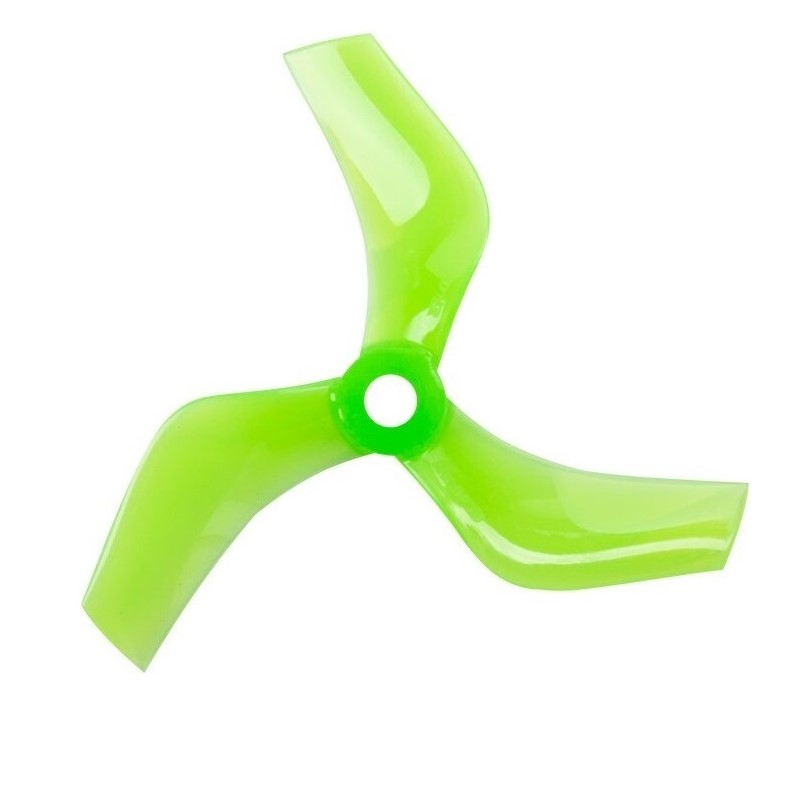

FPV (First Person View) Nedir ? Son yıllarda popüler olan FPV ,radyo kontrol hobisinin bir dalı olarak karşımıza çıkmaktadır. “First Person View” (FPV), ilk kişi gözünden görmek yada daha net bir tarifle ”Pilot gözü ile görmek” şeklinde anlamlandırılabilir.